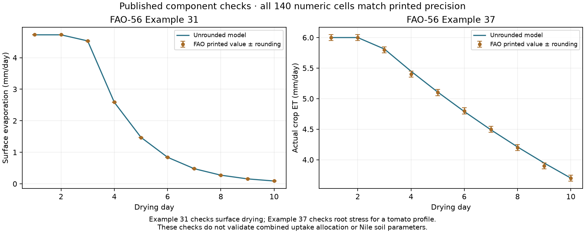
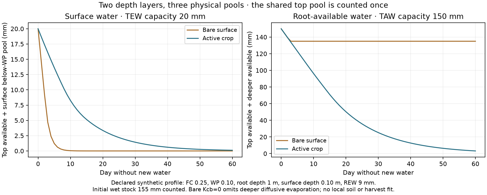

EARTH EVIDENCE · 14 NOVEMBER 2026
Surface drying and root water share a finite supply
Separate soil drying and root-stress components now match the published FAO examples. The combined physical ledger and exact supplied calendar pass independent checks. No new Earth field, yield or population score has been computed.
The same water cannot sit in two independent stores
Surface evaporable water and root-available water overlap in the shallow soil. The model partitions physical water into top plant-available water, deeper plant-available water and surface water below wilting point that evaporation can remove but roots cannot use. The top pool contributes to both diagnostics and is stored once.
Supplied water refills the pools and pays drainage explicitly. Evaporation uses only surface water, then root uptake draws proportionally from remaining plant-available water. Initial wet stocks, delivered inputs, both ET fluxes and drainage close the same ledger. This operator and uptake allocation remain declared approximations.
Published component checks
Example 31 tests surface drying for ten days. Example 37 tests root stress on a tomato profile for ten days; it does not set cereal or Nile parameters. All 140 printed numeric cells agree within half of their last displayed decimal. The independent review uses the original source rows and 40-digit Decimal arithmetic.

Full source/model values for every column are in the CSV. Passing component equations does not validate the combined model's uptake or drainage assumptions.Example 31
Surface evaporation (mm/day)
| Day | FAO printed | Model | Rounding tolerance |
|---|
| 1 | 4.73 | 4.725000 | 0.005 |
| 2 | 4.73 | 4.725000 | 0.005 |
| 3 | 4.53 | 4.531705 | 0.005 |
| 4 | 2.59 | 2.585131 | 0.005 |
| 5 | 1.47 | 1.474700 | 0.005 |
| 6 | 0.84 | 0.841249 | 0.005 |
| 7 | 0.48 | 0.479894 | 0.005 |
| 8 | 0.27 | 0.273758 | 0.005 |
| 9 | 0.16 | 0.156166 | 0.005 |
| 10 | 0.09 | 0.089086 | 0.005 |
Example 37
Actual crop ET (mm/day)
| Day | FAO printed | Model | Rounding tolerance |
|---|
| 1 | 6.0 | 6.000000 | 0.05 |
| 2 | 6.0 | 6.000000 | 0.05 |
| 3 | 5.8 | 5.812500 | 0.05 |
| 4 | 5.4 | 5.449219 | 0.05 |
| 5 | 5.1 | 5.108643 | 0.05 |
| 6 | 4.8 | 4.789352 | 0.05 |
| 7 | 4.5 | 4.490018 | 0.05 |
| 8 | 4.2 | 4.209392 | 0.05 |
| 9 | 3.9 | 3.946305 | 0.05 |
| 10 | 3.7 | 3.699661 | 0.05 |
Combined water accounting
Independent scalar simulations check 36,000 profile-days and 108,000 compartment states across 200 synthetic columns. Every physical pool stays bounded; surface and root losses spend the same water. Maximum observed model daily closure error is 9.9e-14 mm, a numerical precision check rather than a measure of physical accuracy.

Synthetic profile and initial water are supplied explicitly. The pure-bare case sets Kcb=0 and omits deeper diffusive evaporation, leaving its deeper 135 mm store unchanged by policy. This is not evidence of indefinite deep-water retention in real soils or an Earth harvest prediction.
A clock that retains supplied event boundaries
The clock splits at climate-bin, daily and supplied event boundaries. Monthly totals are distributed by duration; rates and temperatures are repeated without duration scaling. Every resulting step is at most one day, and soil fluxes receive its actual duration.
The declared mathematical example has 379 segments in 365 days. Its supplied capture window spans 106.458333 days and its wrapping crop window 121.666667 days, with no overlap. Decimal integration independently recovers all twelve source-bin totals for both example columns. Dates and uniform within-bin forcing remain unqualified for actual fields.